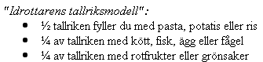

Ishockey
Ishockey har utvecklas till ett mycket intensivt spel.
Tiden på isen innebär utnyttjande av hela förbränningskapaciteten,
till vilken ofta maximal spjälkningshastighet adderas (nedbrytning av
socker, lagrat i muskulaturen, till mjölksyra). Under en minut med
intensivt spel omsätts 30-40 kcal. Kolhydrat är i denna fas det enda
energigivande bränslet. För de spelare som utnyttjas mest under en
match är energibehovet 900-1200 kcal för de tre perioderna, därtill
kommer några 100 kcal under uppvärmningen. Minst 300 g kolhydrater
förbrukas under en sådan match. Ett matchdygn uppgår således den totala
energiomsättningen till 3500 kcal.
Kvinnors ishockeyspelande har ännu inte kommit upp i samma höga
intensitet. Därefter är energikravet vid spel mer måttligt och uppgår
till ca 20 kcal per minut. Ett matchdygn blir då energiomsättningen ca 2500 kcal.
Energiomsättningen under ett träningsdag kan bli väsentligt högre än
under en matchdag, avgörande är vilka moment som tränas. Den rena
teknikträningen är inte lika energikrävande som konditions-, styrke-
och matchträningen. Dagar med stort inslag av den senare typen av
träning uppgår energiomsättningen till totalt
3500-4000 kcal, medan träningsfria eller teknikträningsdagar endast
ger en energiomsättning på 2000-2500 kcal. Kvinnliga ishockeyspelare
ligger vid hårdträning på energinivåer kring 3000-3500 per dygn.
MAT.
Planera in frukost, lunch, middag, kvällsmål och
eventuellt något mellanmål i träningsprogrammet. Måltiderna behöver
inte alltid komma i den ordningen, kvällsmålet kanske passar bättre
före träningen och middagen senare på kvällen. Det viktiga är att du
anpassar måltiderna efter dina egna tider, mat 2-3 timmar före och så
snabbt som möjligt efter träningen är en bra tumregel. Var noga med att
varva mat, vila och träning. För att bygga upp dina muskler krävs både
träning och tillräckligt mycket mat. Hårda träningspass kräver dessutom
att du ätit tillräckligt mycket kolhydrater,
Du får en bra sammansättning på lunch och middagsmat om du äter enligt

Hur många portioner du behöver beror på
ditt energibehov. Ät alltid bröd till maten och avsluta med en frukt
eller någon annan liten efterrätt.
VÄTSKA
Varje dag behöver du 2-3 liter vätska och ungefär 1 liter av det får du
via maten, resten måste du dricka. När du tränar går det ytterligare
1-2 liter per träningstimme. Väg dig några gånger utan kläder före och
efter träningen, så vet du ungefär hur mycket vätska du förlorar.
Drick sedan lika många liter vatten som du lättat i vikt. 5-6 glas
motsvarar 1 liter vatten.
Om du under match tänker dricka något annat än vatten måste du prova
dig fram till lämplig dryck under träningen. Börja med en
sockerkoncentration på max 2,5 procent.
MATCH
Ta alla tillfällen du har att dricka. En sportdryck
kan vara bra under en hård match för att hålla blodsockerhalt och
koncentration uppe. Ljummen vätska är skonsammast för magen. Små
mängder ofta (1-2 dl) är bättre än mycket vätska vid något enstaka
tillfälle. En stor mängd vätska ligger kvar längre i matsäcken.
EFTER MATCHEN
Nu är musklerna tomma på glykogen och vätskeförråden tömda. Drick
sportdryck, vatten, juice eller något annat och försök så snabbt som
möjligt äta en smörgås, banan eller bulle.
Det kan ta 1-2 dygn att helt återfylla glykogendepåerna. Första timmen
efter hård fysisk aktivitet är din förmåga att lagra in muskelglykogen
som störst. Försök därefter att så snabbt som möjligt äta en
kolhydratrik måltid, se tabell 1-3. Ju snabbare du fyller på med nya
kolhydrater efter match eller träning, desto snabbare går
återhämtningen.
TRÄNINGSLÄGER
Fyll dina glykogenförråd före lägret genom att göra en
Glykogenuppladdning. Vid hård fysisk ansträngning behöver du 8-10 g
kolhydrater per kg kroppsvikt och dag, En muskel som är tom på
glykogen skadas lättare än en välfylld.
Anpassa mattider till träning och vila. Förbered lägerköket på att ni
vill ha, frukost, lunch, middag och kvällsmål, och att ni behöver extra
mycket pasta, ris, potatis, bröd, gryn och musli.Sänd gärna en kopia på
detta eller brochyren "Uppladdningen" för att de ska veta vad ni önskar
och varför.
Hem